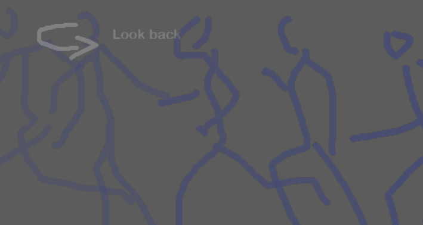
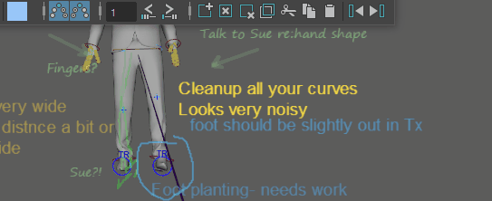

使用 Blue Pencil 重影预可视化动画
可以在上一帧或下一帧上显示 Blue Pencil 草图，以便可以预览在当前帧之前和之后发生的情况。
有关动画重影的信息，请参见重影编辑器。
查看在当前时间之前和之后显示的 Blue Pencil 帧
- 单击 Blue Pencil 工具栏中的 Blue Pencil“重影上一个”(Ghost Previous) (
 ) 和“重影下一个”(Ghost Next) (
) 和“重影下一个”(Ghost Next) ( ) 图标。草图不透明度受该帧与活动帧的接近程度影响。与之前或之后出现许多帧的帧上的草图相比，当前帧附近的草图看起来更不透明。
) 图标。草图不透明度受该帧与活动帧的接近程度影响。与之前或之后出现许多帧的帧上的草图相比，当前帧附近的草图看起来更不透明。
更改显示的帧数

在“重影上一个”(Ghost Previous) () 和“重影下一个”(Ghost Next) () 图标上单击鼠标右键，然后使用右键单击滑块选择要显示的帧数。最多可以显示 10 帧。
更改重影帧的颜色
- 单击“重影上一个”(Ghost Previous) () 和“重影下一个”(Ghost Next) () 右键单击窗口底部的“启用颜色覆盖”(Enable Color Override)选项。

“启用颜色覆盖”(Enable Color Override)允许为当前帧之前或之后的任何帧指定颜色，它将以绘制时使用的颜色显示。如果要在具有许多图形的场景中标识活动帧，这将非常有用。
注： “启用颜色覆盖”(Enable Color Override)选项将出现在“重影上一个”(Ghost Previous) () 和“重影下一个”(Ghost Next) () 右键单击窗口中。如果为一个设置启用该选项，则该选项将对这两个设置都变为活动状态。例如，如果设置“重影上一个”(Ghost Previous)的“启用颜色覆盖”(Enable Color Override)选项，那么也会为“重影下一个”(Ghost Next)帧启用该选项。
- 双击色样以打开“颜色设置”(Color Settings)窗口，以便为上一个图形和下一个图形设置自定义颜色。